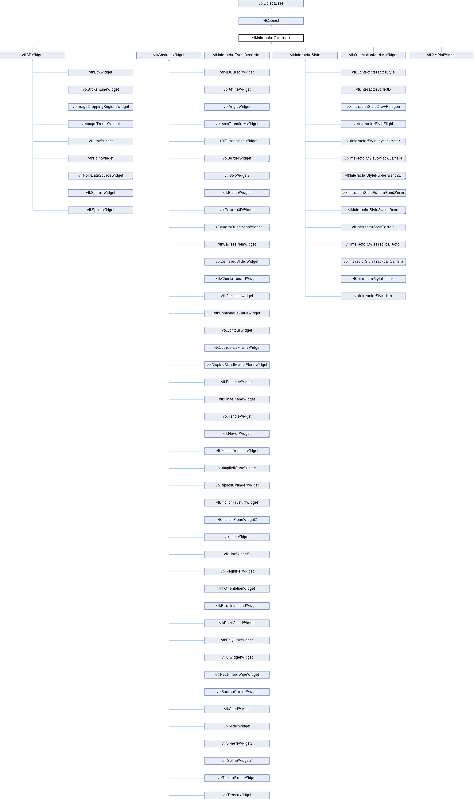

|
Etrek
|
|
Etrek
|
an abstract superclass for classes observing events invoked by vtkRenderWindowInteractor More...
#include <vtkInteractorObserver.h>

Public Member Functions | |
| vtkTypeMacro (vtkInteractorObserver, vtkObject) | |
| void | PrintSelf (ostream &os, vtkIndent indent) override |
| virtual void | SetEnabled (int) |
| int | GetEnabled () |
| void | EnabledOn () |
| void | EnabledOff () |
| void | On () |
| void | Off () |
| virtual void | OnChar () |
| virtual void | SetInteractor (vtkRenderWindowInteractor *iren) |
| vtkGetObjectMacro (Interactor, vtkRenderWindowInteractor) | |
| vtkSetClampMacro (Priority, float, 0.0f, 1.0f) | |
| vtkGetMacro (Priority, float) | |
| vtkBooleanMacro (PickingManaged, bool) | |
| virtual void | SetPickingManaged (bool managed) |
| vtkGetMacro (PickingManaged, bool) | |
| vtkSetMacro (KeyPressActivation, vtkTypeBool) | |
| vtkGetMacro (KeyPressActivation, vtkTypeBool) | |
| vtkBooleanMacro (KeyPressActivation, vtkTypeBool) | |
| vtkSetMacro (KeyPressActivationValue, char) | |
| vtkGetMacro (KeyPressActivationValue, char) | |
| vtkGetObjectMacro (DefaultRenderer, vtkRenderer) | |
| virtual void | SetDefaultRenderer (vtkRenderer *) |
| vtkGetObjectMacro (CurrentRenderer, vtkRenderer) | |
| virtual void | SetCurrentRenderer (vtkRenderer *) |
| void | GrabFocus (vtkCommand *mouseEvents, vtkCommand *keypressEvents=nullptr) |
| void | ReleaseFocus () |
| Public Member Functions inherited from vtkObject | |
| vtkBaseTypeMacro (vtkObject, vtkObjectBase) | |
| virtual void | DebugOn () |
| virtual void | DebugOff () |
| bool | GetDebug () |
| void | SetDebug (bool debugFlag) |
| virtual void | Modified () |
| virtual vtkMTimeType | GetMTime () |
| void | PrintSelf (ostream &os, vtkIndent indent) override |
| void | RemoveObserver (unsigned long tag) |
| void | RemoveObservers (unsigned long event) |
| void | RemoveObservers (const char *event) |
| void | RemoveAllObservers () |
| vtkTypeBool | HasObserver (unsigned long event) |
| vtkTypeBool | HasObserver (const char *event) |
| vtkTypeBool | InvokeEvent (unsigned long event) |
| vtkTypeBool | InvokeEvent (const char *event) |
| std::string | GetObjectDescription () const override |
| unsigned long | AddObserver (unsigned long event, vtkCommand *, float priority=0.0f) |
| unsigned long | AddObserver (const char *event, vtkCommand *, float priority=0.0f) |
| vtkCommand * | GetCommand (unsigned long tag) |
| void | RemoveObserver (vtkCommand *) |
| void | RemoveObservers (unsigned long event, vtkCommand *) |
| void | RemoveObservers (const char *event, vtkCommand *) |
| vtkTypeBool | HasObserver (unsigned long event, vtkCommand *) |
| vtkTypeBool | HasObserver (const char *event, vtkCommand *) |
| template<class U, class T> | |
| unsigned long | AddObserver (unsigned long event, U observer, void(T::*callback)(), float priority=0.0f) |
| template<class U, class T> | |
| unsigned long | AddObserver (unsigned long event, U observer, void(T::*callback)(vtkObject *, unsigned long, void *), float priority=0.0f) |
| template<class U, class T> | |
| unsigned long | AddObserver (unsigned long event, U observer, bool(T::*callback)(vtkObject *, unsigned long, void *), float priority=0.0f) |
| vtkTypeBool | InvokeEvent (unsigned long event, void *callData) |
| vtkTypeBool | InvokeEvent (const char *event, void *callData) |
| virtual void | SetObjectName (const std::string &objectName) |
| virtual std::string | GetObjectName () const |
| Public Member Functions inherited from vtkObjectBase | |
| const char * | GetClassName () const |
| virtual vtkTypeBool | IsA (const char *name) |
| virtual vtkIdType | GetNumberOfGenerationsFromBase (const char *name) |
| virtual void | Delete () |
| virtual void | FastDelete () |
| void | InitializeObjectBase () |
| void | Print (ostream &os) |
| void | Register (vtkObjectBase *o) |
| virtual void | UnRegister (vtkObjectBase *o) |
| int | GetReferenceCount () |
| void | SetReferenceCount (int) |
| bool | GetIsInMemkind () const |
| virtual void | PrintHeader (ostream &os, vtkIndent indent) |
| virtual void | PrintTrailer (ostream &os, vtkIndent indent) |
| virtual bool | UsesGarbageCollector () const |
Static Public Member Functions | |
| static void | ComputeDisplayToWorld (vtkRenderer *ren, double x, double y, double z, double worldPt[4]) |
| static void | ComputeWorldToDisplay (vtkRenderer *ren, double x, double y, double z, double displayPt[3]) |
| Static Public Member Functions inherited from vtkObject | |
| static vtkObject * | New () |
| static void | BreakOnError () |
| static void | SetGlobalWarningDisplay (vtkTypeBool val) |
| static void | GlobalWarningDisplayOn () |
| static void | GlobalWarningDisplayOff () |
| static vtkTypeBool | GetGlobalWarningDisplay () |
| Static Public Member Functions inherited from vtkObjectBase | |
| static vtkTypeBool | IsTypeOf (const char *name) |
| static vtkIdType | GetNumberOfGenerationsFromBaseType (const char *name) |
| static vtkObjectBase * | New () |
| static void | SetMemkindDirectory (const char *directoryname) |
| static bool | GetUsingMemkind () |
Protected Member Functions | |
| virtual void | RegisterPickers () |
| void | UnRegisterPickers () |
| vtkPickingManager * | GetPickingManager () |
| vtkAssemblyPath * | GetAssemblyPath (double X, double Y, double Z, vtkAbstractPropPicker *picker) |
| int | RequestCursorShape (int requestedShape) |
| virtual void | StartInteraction () |
| virtual void | EndInteraction () |
| void | ComputeDisplayToWorld (double x, double y, double z, double worldPt[4]) |
| void | ComputeWorldToDisplay (double x, double y, double z, double displayPt[3]) |
| Protected Member Functions inherited from vtkObject | |
| void | RegisterInternal (vtkObjectBase *, vtkTypeBool check) override |
| void | UnRegisterInternal (vtkObjectBase *, vtkTypeBool check) override |
| void | InternalGrabFocus (vtkCommand *mouseEvents, vtkCommand *keypressEvents=nullptr) |
| void | InternalReleaseFocus () |
| Protected Member Functions inherited from vtkObjectBase | |
| virtual void | ReportReferences (vtkGarbageCollector *) |
| vtkObjectBase (const vtkObjectBase &) | |
| void | operator= (const vtkObjectBase &) |
Static Protected Member Functions | |
| static void | ProcessEvents (vtkObject *object, unsigned long event, void *clientdata, void *calldata) |
| Static Protected Member Functions inherited from vtkObjectBase | |
| static vtkMallocingFunction | GetCurrentMallocFunction () |
| static vtkReallocingFunction | GetCurrentReallocFunction () |
| static vtkFreeingFunction | GetCurrentFreeFunction () |
| static vtkFreeingFunction | GetAlternateFreeFunction () |
Protected Attributes | |
| int | Enabled |
| vtkCallbackCommand * | EventCallbackCommand |
| vtkCallbackCommand * | KeyPressCallbackCommand |
| float | Priority |
| bool | PickingManaged |
| vtkTypeBool | KeyPressActivation |
| char | KeyPressActivationValue |
| vtkRenderWindowInteractor * | Interactor |
| vtkRenderer * | CurrentRenderer |
| vtkRenderer * | DefaultRenderer |
| unsigned long | CharObserverTag |
| unsigned long | DeleteObserverTag |
| vtkObserverMediator * | ObserverMediator |
| Protected Attributes inherited from vtkObject | |
| bool | Debug |
| vtkTimeStamp | MTime |
| vtkSubjectHelper * | SubjectHelper |
| std::string | ObjectName |
| Protected Attributes inherited from vtkObjectBase | |
| std::atomic< int32_t > | ReferenceCount |
| vtkWeakPointerBase ** | WeakPointers |
an abstract superclass for classes observing events invoked by vtkRenderWindowInteractor
vtkInteractorObserver is an abstract superclass for subclasses that observe events invoked by vtkRenderWindowInteractor. These subclasses are typically things like 3D widgets; objects that interact with actors in the scene, or interactively probe the scene for information.
vtkInteractorObserver defines the method SetInteractor() and enables and disables the processing of events by the vtkInteractorObserver. Use the methods EnabledOn() or SetEnabled(1) to turn on the interactor observer, and the methods EnabledOff() or SetEnabled(0) to turn off the interactor. Initial value is 0.
To support interactive manipulation of objects, this class (and subclasses) invoke the events StartInteractionEvent, InteractionEvent, and EndInteractionEvent. These events are invoked when the vtkInteractorObserver enters a state where rapid response is desired: mouse motion, etc. The events can be used, for example, to set the desired update frame rate (StartInteractionEvent), operate on data or update a pipeline (InteractionEvent), and set the desired frame rate back to normal values (EndInteractionEvent). Two other events, EnableEvent and DisableEvent, are invoked when the interactor observer is enabled or disabled.
|
protected |
Helper method for subclasses.
|
static |
Convenience methods for outside classes. Make sure that the parameter "ren" is not-null.
|
protectedvirtual |
Reimplemented in vtkOrientationMarkerWidget.
|
protected |
Proceed to a pick, whether through the PickingManager if the picking is managed or directly using the picker, and return the assembly path.
|
protected |
Return the picking manager associated on the context on which the observer currently belong.
| void vtkInteractorObserver::GrabFocus | ( | vtkCommand * | mouseEvents, |
| vtkCommand * | keypressEvents = nullptr ) |
These methods enable an interactor observer to exclusively grab all events invoked by its associated vtkRenderWindowInteractor. (This method is typically used by widgets to grab events once an event sequence begins.) The GrabFocus() signature takes up to two vtkCommands corresponding to mouse events and keypress events. (These two commands are separated so that the widget can listen for its activation keypress, as well as listening for DeleteEvents, without actually having to process mouse events.)
|
virtual |
Sets up the keypress-i event.
Reimplemented in vtkContextInteractorStyle, vtkImagePlaneWidget, vtkInteractorStyle, vtkInteractorStyleFlight, vtkInteractorStyleImage, vtkInteractorStyleRubberBandPick, vtkInteractorStyleSwitch, vtkInteractorStyleTerrain, vtkInteractorStyleUser, and vtkParallelCoordinatesInteractorStyle.
|
overridevirtual |
Methods invoked by print to print information about the object including superclasses. Typically not called by the user (use Print() instead) but used in the hierarchical print process to combine the output of several classes.
Reimplemented from vtkObjectBase.
Reimplemented in vtkInteractorStyle3D, vtkInteractorStyle, vtkInteractorStyleAreaSelectHover, vtkInteractorStyleDrawPolygon, vtkInteractorStyleFlight, vtkInteractorStyleImage, vtkInteractorStyleJoystickActor, vtkInteractorStyleJoystickCamera, vtkInteractorStyleMultiTouchCamera, vtkInteractorStyleRubberBand2D, vtkInteractorStyleRubberBand3D, vtkInteractorStyleRubberBandPick, vtkInteractorStyleRubberBandZoom, vtkInteractorStyleSwitch, vtkInteractorStyleSwitchBase, vtkInteractorStyleTerrain, vtkInteractorStyleTrackball, vtkInteractorStyleTrackballActor, vtkInteractorStyleTrackballCamera, vtkInteractorStyleTreeMapHover, vtkInteractorStyleUnicam, vtkInteractorStyleUser, vtkLightWidget, vtkLineWidget2, vtkLineWidget, vtkLogoWidget, vtkMagnifierWidget, vtkOrientationMarkerWidget, vtkParallelCoordinatesInteractorStyle, vtkParallelopipedWidget, vtkPlaneWidget, vtkPlaybackWidget, vtkPointCloudWidget, vtkPointWidget, vtkPolyDataSourceWidget, vtkPolyLineWidget, vtkProgressBarWidget, vtkQWidgetWidget, vtkRectilinearWipeWidget, vtkResliceCursorWidget, vtkScalarBarWidget, vtkSeedWidget, vtkSliderWidget, vtkSphereWidget2, vtkSphereWidget, vtkSplineWidget2, vtkSplineWidget, vtkTensorProbeWidget, vtkTensorWidget, vtkTextWidget, and vtkXYPlotWidget.
|
staticprotected |
Handles the char widget activation event. Also handles the delete event.
|
protectedvirtual |
Register internal Pickers in the Picking Manager. Must be reimplemented by concrete widgets to register their pickers.
Reimplemented in vtkBalloonWidget, vtkBoxWidget, vtkBrokenLineWidget, vtkImagePlaneWidget, vtkImageTracerWidget, vtkImplicitPlaneWidget, vtkLineWidget, vtkPlaneWidget, vtkPointWidget, vtkSphereWidget, and vtkSplineWidget.
|
virtual |
Reimplemented in vtkSeedWidget.
|
virtual |
Reimplemented in vtkCameraOrientationWidget, and vtkInteractorStyleSwitch.
|
inlinevirtual |
Methods for turning the interactor observer on and off, and determining its state. All subclasses must provide the SetEnabled() method. Enabling a vtkInteractorObserver has the side effect of adding observers; disabling it removes the observers. Prior to enabling the vtkInteractorObserver you must set the render window interactor (via SetInteractor()). Initial value is 0.
Reimplemented in vtkAbstractWidget, vtkAffineWidget, vtkAngleWidget, vtkAxesTransformWidget, vtkBalloonWidget, vtkBiDimensionalWidget, vtkBoxWidget2, vtkBoxWidget, vtkBrokenLineWidget, vtkButtonWidget, vtkCamera3DWidget, vtkCameraPathWidget, vtkCaptionWidget, vtkCheckerboardWidget, vtkContourWidget, vtkCoordinateFrameWidget, vtkDisplaySizedImplicitPlaneWidget, vtkDistanceWidget, vtkHandleWidget, vtkHoverWidget, vtkImageCroppingRegionsWidget, vtkImagePlaneWidget, vtkImageTracerWidget, vtkImplicitPlaneWidget2, vtkImplicitPlaneWidget, vtkInteractorEventRecorder, vtkInteractorStyle, vtkLineWidget2, vtkLineWidget, vtkMagnifierWidget, vtkOrientationMarkerWidget, vtkParallelopipedWidget, vtkPlaneWidget, vtkPointCloudWidget, vtkPointWidget, vtkPolyLineWidget, vtkQWidgetWidget, vtkResliceCursorWidget, vtkSeedWidget, vtkSphereWidget2, vtkSphereWidget, vtkSplineWidget2, vtkSplineWidget, vtkTensorWidget, and vtkXYPlotWidget.
|
virtual |
This method is used to associate the widget with the render window interactor. Observers of the appropriate events invoked in the render window interactor are set up as a result of this method invocation. The SetInteractor() method must be invoked prior to enabling the vtkInteractorObserver. It automatically registers available pickers to the Picking Manager.
Reimplemented in vtkInteractorEventRecorder, vtkInteractorStyle, vtkInteractorStyleAreaSelectHover, vtkInteractorStyleSwitch, vtkInteractorStyleTreeMapHover, and vtkSeedWidget.
|
protectedvirtual |
Utility routines used to start and end interaction. For example, it switches the display update rate. It does not invoke the corresponding events.
|
protected |
Unregister internal pickers from the Picking Manager.
| vtkInteractorObserver::vtkBooleanMacro | ( | PickingManaged | , |
| bool | ) |
Enable/Disable the use of a manager to process the picking. Enabled by default.
| vtkInteractorObserver::vtkGetObjectMacro | ( | CurrentRenderer | , |
| vtkRenderer | ) |
Set/Get the current renderer. Normally when the widget is activated (SetEnabled(1) or when keypress activation takes place), the renderer over which the mouse pointer is positioned is used and assigned to this Ivar. Alternatively, you might want to set the CurrentRenderer explicitly. This is especially true with multiple viewports (renderers). WARNING: note that if the DefaultRenderer Ivar is set (see above), it will always override the parameter passed to SetCurrentRenderer, unless it is NULL. (i.e., SetCurrentRenderer(foo) = SetCurrentRenderer(DefaultRenderer).
| vtkInteractorObserver::vtkGetObjectMacro | ( | DefaultRenderer | , |
| vtkRenderer | ) |
Set/Get the default renderer to use when activating the interactor observer. Normally when the widget is activated (SetEnabled(1) or when keypress activation takes place), the renderer over which the mouse pointer is positioned is used. Alternatively, you can specify the renderer to bind the interactor to when the interactor observer is activated.
| vtkInteractorObserver::vtkSetClampMacro | ( | Priority | , |
| float | , | ||
| 0. | 0f, | ||
| 1. | 0f ) |
Set/Get the priority at which events are processed. This is used when multiple interactor observers are used simultaneously. The default value is 0.0 (lowest priority.) Note that when multiple interactor observer have the same priority, then the last observer added will process the event first. (Note: once the SetInteractor() method has been called, changing the priority does not effect event processing. You will have to SetInteractor(NULL), change priority, and then SetInteractor(iren) to have the priority take effect.)
| vtkInteractorObserver::vtkSetMacro | ( | KeyPressActivation | , |
| vtkTypeBool | ) |
Enable/Disable of the use of a keypress to turn on and off the interactor observer. (By default, the keypress is 'i' for "interactor observer".) Set the KeyPressActivationValue to change which key activates the widget.)
| vtkInteractorObserver::vtkSetMacro | ( | KeyPressActivationValue | , |
| char | ) |
Specify which key press value to use to activate the interactor observer (if key press activation is enabled). By default, the key press activation value is 'i'. Note: once the SetInteractor() method is invoked, changing the key press activation value will not affect the key press until SetInteractor(NULL)/SetInteractor(iren) is called.